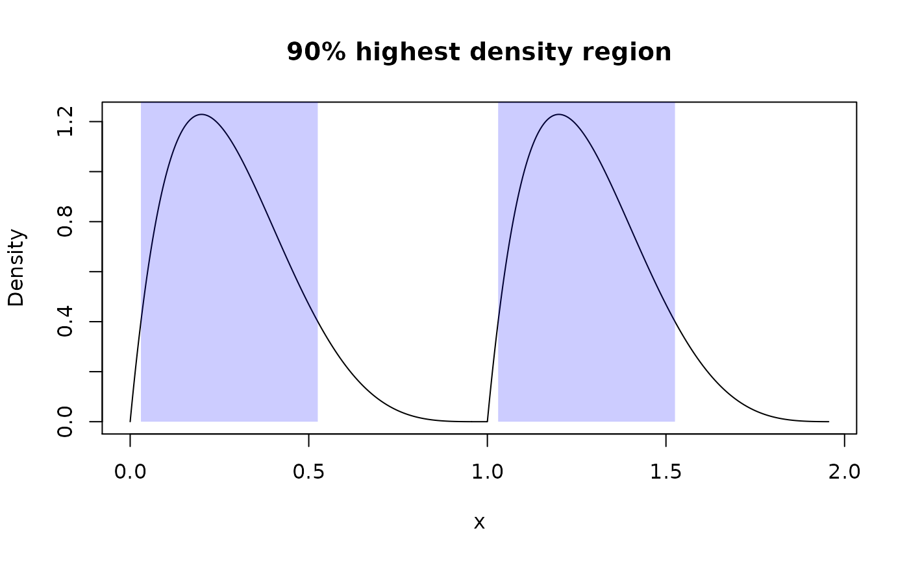

Summarize pdqr-functions with summ_*()
Source: vignettes/pdqr-04-summarize.Rmd
pdqr-04-summarize.RmdConcept of summary functions is to take one or more pdqr-function(s) and return a summary value (which shouldn’t necessarily be a number). Argument method is used to choose function-specific algorithm of computation.
Note that some summary functions can accumulate pdqr approximation error (like summ_moment() for example). For better precision increase number intervals for piecewise-linear density using either n argument for density() in new_*() or n_grid argument in as_*().
We will use the following distributions throughout this vignette:
my_beta <- as_d(dbeta, shape1 = 2, shape2 = 5)
my_norm <- as_d(dnorm, mean = 0.5)
my_beta_mix <- form_mix(list(my_beta, my_beta + 1))Although they both are continuous, discrete distributions are also fully supported.
Basic numerical summary
Center
# Usage of `summ_center()`
summ_center(my_beta, method = "mean")
#> [1] 0.2857136
summ_center(my_beta, method = "median")
#> [1] 0.2644498
summ_center(my_beta, method = "mode")
#> [1] 0.2000014
# Usage of wrappers
summ_mean(my_beta)
#> [1] 0.2857136
summ_median(my_beta)
#> [1] 0.2644498
summ_mode(my_beta)
#> [1] 0.2000014
# `summ_mode()` can compute local modes instead of default global
summ_mode(my_beta_mix, method = "local")
#> [1] 0.2000014 1.2000014Spread
# Usage of `summ_spread()`
summ_spread(my_beta, method = "sd")
#> [1] 0.1597178
summ_spread(my_beta, method = "var")
#> [1] 0.02550977
summ_spread(my_beta, method = "iqr")
#> [1] 0.2283162
summ_spread(my_beta, method = "mad")
#> [1] 0.1122417
summ_spread(my_beta, method = "range")
#> [1] 0.955573
# Usage of wrappers
summ_sd(my_beta)
#> [1] 0.1597178
summ_var(my_beta)
#> [1] 0.02550977
summ_iqr(my_beta)
#> [1] 0.2283162
summ_mad(my_beta)
#> [1] 0.1122417
summ_range(my_beta)
#> [1] 0.955573Moments
summ_moment() has extra arguments for controlling the nature of moment (which can be combined):
summ_moment(my_beta, order = 3)
#> [1] 0.0476182
summ_moment(my_beta, order = 3, central = TRUE)
#> [1] 0.002429287
summ_moment(my_beta, order = 3, standard = TRUE)
#> [1] 11.68727
summ_moment(my_beta, order = 3, absolute = TRUE)
#> [1] 0.0476182There are wrappers for most common moments: skewness and kurtosis:
Quantiles
summ_quantile(f, probs) is essentially a more strict version of as_q(f)(probs):
Entropy
summ_entropy() computes differential entropy (which can be negative) for “continuous” type pdqr-functions, and information entropy for “discrete”:
summ_entropy(my_beta)
#> [1] -0.4845421
summ_entropy(new_d(1:10, type = "discrete"))
#> [1] 2.302585summ_entropy2() computes entropy based summary of relation between a pair of distributions. There are two methods: default “relative” (for relative entropy which is Kullback-Leibler divergence) and “cross” (for cross-entropy). It handles different supports by using clip (default exp(-20)) value instead of 0 during log() computation. Order of input does matter: summ_entropy2() uses support of the first pdqr-function as integration/summation reference.
Regions
Distributions can be summarized with regions: union of closed intervals. Region is represented as data frame with rows representing intervals and two columns “left” and “right” with left and right interval edges respectively.
Single interval
summ_interval() summarizes input pdqr-function with single interval based on the desired coverage level supplied in argument level. It has three methods:
- Default “minwidth”: interval with total probability of
levelthat has minimum width. - “percentile”:
0.5*(1-level)and1 - 0.5*(1-level)quantiles. - “sigma”: interval centered at the mean of distribution. Left and right edges are distant from center by the amount of standard deviation multiplied by
level’s critical value (computed from normal distribution). Corresponds to classical confidence interval of sample based on assumption of normality.
Highest density region
summ_hdr() computes highest density region (HDR) of a distribution: set of intervals with the lowest total width among all sets with total probability not less than an input level. With unimodal distribution it is essentially the same as summ_interval() with “minwidth” method.
# Unimodal distribution
summ_hdr(my_beta, level = 0.9)
#> left right
#> 1 0.03013169 0.5253741
# Multimodal distribution
summ_hdr(my_beta_mix, level = 0.9)
#> left right
#> 1 0.03015315 0.5252785
#> 2 1.03015315 1.5252785
# Compare this to single interval of minimum width
summ_interval(my_beta_mix, level = 0.9, method = "minwidth")
#> left right
#> 1 0.05125316 1.448297Work with region
There is a region_*() family of functions which helps working with them:
beta_mix_hdr <- summ_hdr(my_beta_mix, level = 0.9)
beta_mix_interval <- summ_interval(my_beta_mix, level = 0.9)
# Test if points are inside region
region_is_in(beta_mix_hdr, x = seq(0, 2, by = 0.5))
#> [1] FALSE TRUE FALSE TRUE FALSE
# Compute total probability of a region
region_prob(beta_mix_hdr, f = my_beta_mix)
#> [1] 0.899991
# Pdqr-function doesn't need to be the same as used for computing region
region_prob(beta_mix_hdr, f = my_norm)
#> [1] 0.336239
# Compute height of region: minimum value of d-function inside region
region_height(beta_mix_hdr, f = my_beta_mix)
#> [1] 0.400163
# Compute width of region: sum of interval widths
region_width(beta_mix_hdr)
#> [1] 0.9902507
# Compare widths with single interval
region_width(beta_mix_interval)
#> [1] 1.397043
# Draw region on existing plot
plot(my_beta_mix, main = "90% highest density region")
region_draw(beta_mix_hdr)
Distance
Function summ_distance() takes two pdqr-functions and returns a distance between two distributions they represent. Many methods of computation are available. This might be useful for doing comparison statistical inference.
# Kolmogorov-Smirnov distance
summ_distance(my_beta, my_norm, method = "KS")
#> [1] 0.419766
# Total variation distance
summ_distance(my_beta, my_norm, method = "totvar")
#> [1] 0.730451
# Probability of one distribution being bigger than other, normalized to [0;1]
summ_distance(my_beta, my_norm, method = "compare")
#> [1] 0.1678761
# Wassertein distance: "average path density point should travel while
# transforming from one into another"
summ_distance(my_beta, my_norm, method = "wass")
#> [1] 0.6952109
# Cramer distance: integral of squared difference of p-functions
summ_distance(my_beta, my_norm, method = "cramer")
#> [1] 0.1719884
# "Align" distance: path length for which one of distribution should be "moved"
# towards the other so that they become "aligned" (probability of one being
# greater than the other is 0.5)
summ_distance(my_beta, my_norm, method = "align")
#> [1] 0.2147014
# "Entropy" distance: `KL(f, g) + KL(g, f)`, where `KL()` is Kullback-Leibler
# divergence. Usually should be used for distributions with same support, but
# works even if they are different (with big numerical penalty).
summ_distance(my_beta, my_norm, method = "entropy")
#> [1] 13.05768Separation and classification
Separation
Function summ_separation() computes a threshold that optimally separates distributions represented by pair of input pdqr-functions. In other words, summ_separation() solves a binary classification problem with one-dimensional linear classifier: values not more than some threshold are classified as one class, and more than threshold - as another. Order of input functions doesn’t matter.
Classification metrics
Functions summ_classmetric() and summ_classmetric_df() compute metric(s) of classification setup, similar to one used in summ_separation(). Here classifier threshold should be supplied and order of input matters. Classification is assumed to be done as follows: any x value not more than threshold value is classified as “negative”; if more - “positive”. Classification metrics are computed based on two pdqr-functions: f, which represents the distribution of values which should be classified as “negative” (“true negative”), and g - the same for “positive” (“true positive”).
# Many threshold values can be supplied
thres_vec <- seq(0, 1, by = 0.2)
summ_classmetric(f = my_beta, g = my_norm, threshold = thres_vec, method = "F1")
#> [1] 0.5138193 0.5436321 0.6089061 0.6131005 0.5522756 0.4715757
# In `summ_classmetric_df()` many methods can be supplied
summ_classmetric_df(
f = my_beta, g = my_norm, threshold = thres_vec, method = c("GM", "F1", "MCC")
)
#> threshold GM F1 MCC
#> 1 0.0 0.0000000 0.5138193 -0.42709306
#> 2 0.2 0.4614729 0.5436321 -0.03892981
#> 3 0.4 0.6433485 0.6089061 0.31475763
#> 4 0.6 0.6643221 0.6131005 0.48370132
#> 5 0.8 0.6176386 0.5522756 0.48316011
#> 6 1.0 0.5554612 0.4715757 0.42709306With summ_roc() and summ_rocauc() one can compute data frame of ROC curve points and ROC AUC value respectively. There is also a roc_plot() function for predefined plotting of ROC curve.
my_roc <- summ_roc(my_beta, my_norm)
head(my_roc)
#> threshold fpr tpr
#> 1 5.253425 0 0.000000e+00
#> 2 5.243918 0 4.811646e-08
#> 3 5.234412 0 9.845779e-08
#> 4 5.224905 0 1.511167e-07
#> 5 5.215398 0 2.061949e-07
#> 6 5.205891 0 2.637984e-07
summ_rocauc(my_beta, my_norm)
#> [1] 0.583938
roc_plot(my_roc)
Ordering
‘pdqr’ has functions that can order set of distributions. They are summ_order(), summ_sort(), and summ_rank(), which are analogues of order(), sort(), and rank() respectively. They take a list of pdqr-functions as input, establish their ordering based on specified method, and return the desired output.
There are two sets of methods:
- Method “compare” uses the following ordering relation: pdqr-function
fis greater thangif and only ifP(f >= g) > 0.5, or in ‘pdqr’ codesumm_prob_true(f >= g) > 0.5. This method orders input based on this relation andorder()function. Notes:- This relation doesn’t strictly define ordering because it is not transitive. It is solved by first preordering input list based on method “mean” and then calling
order(). - Because comparing two pdqr-functions can be time consuming, this method becomes rather slow as number of distributions grows. To increase computation speed (sacrificing a little bit of approximation precision), use less intervals in piecewise-linear approximation of density for “continuous” types of pdqr-functions.
- This relation doesn’t strictly define ordering because it is not transitive. It is solved by first preordering input list based on method “mean” and then calling
- Methods “mean”, “median”, and “mode” are based on
summ_center(): ordering of distributions is defined as ordering of corresponding measures of distribution’s center.
# Here the only clear "correct" ordering is that `a <= b`.
f_list <- list(a = my_beta, b = my_beta + 1, c = my_norm)
# Returns an integer vector representing a permutation which rearranges f_list
# in desired order
summ_order(f_list, method = "compare")
#> [1] 1 3 2
# In this particular case of `f_list` all orderings agree with each other, but
# generally this is not the case: for any pair of methods there is a case
# when they disagree with each other
summ_order(f_list, method = "mean")
#> [1] 1 3 2
summ_order(f_list, method = "median")
#> [1] 1 3 2
summ_order(f_list, method = "mode")
#> [1] 1 3 2
# Use `decreasing = TRUE` to sort decreasingly
summ_order(f_list, method = "compare", decreasing = TRUE)
#> [1] 2 3 1
# Sort list
summ_sort(f_list)
#> $a
#> Density function of continuous type
#> Support: ~[0, 0.95557] (10000 intervals)
#>
#> $c
#> Density function of continuous type
#> Support: ~[-4.25342, 5.25342] (10000 intervals)
#>
#> $b
#> Density function of continuous type
#> Support: ~[1, 1.95557] (10000 intervals)
summ_sort(f_list, decreasing = TRUE)
#> $b
#> Density function of continuous type
#> Support: ~[1, 1.95557] (10000 intervals)
#>
#> $c
#> Density function of continuous type
#> Support: ~[-4.25342, 5.25342] (10000 intervals)
#>
#> $a
#> Density function of continuous type
#> Support: ~[0, 0.95557] (10000 intervals)
# Rank elements: 1 indicates "the smallest", `length(f_list)` - "the biggest"
summ_rank(f_list)
#> a b c
#> 1 3 2Other
Functions summ_prob_true() and summ_prob_false() should be used to extract probabilities from boolean pdqr-functions: outputs of comparing basic operators (like >=, ==, etc.):
summ_prob_true(my_beta >= my_norm)
#> [1] 0.416062
summ_prob_false(my_beta >= 2*my_norm)
#> [1] 0.6391summ_pval() computes p-value(s) of observed statistic(s) based on the distribution. You can compute left, right, or two-sided p-values with methods “left”, “right”, and “both” respectively. By default multiple input values are adjusted for multiple comparisons (using stats::p.adjust()):
# By default two-sided p-value is computed
summ_pval(my_beta, obs = 0.7)
#> [1] 0.02186803
summ_pval(my_beta, obs = 0.7, method = "left")
#> [1] 0.989066
summ_pval(my_beta, obs = 0.7, method = "right")
#> [1] 0.01093401
# Multiple values are adjusted with `p.adjust()` with "holm" method by default
obs_vec <- seq(0, 1, by = 0.1)
summ_pval(my_beta, obs = obs_vec)
#> [1] 0.0000000000 1.0000000000 1.0000000000 1.0000000000 1.0000000000
#> [6] 1.0000000000 0.4915085377 0.1530761780 0.0255840348 0.0009720023
#> [11] 0.0000000000
# Use `adjust = "none"` to not adjust
summ_pval(my_beta, obs = obs_vec, adjust = "none")
#> [1] 0.0000000000 0.2285302047 0.6892806594 0.8403488674 0.4665584871
#> [6] 0.2187482323 0.0819180896 0.0218680254 0.0031980044 0.0001080003
#> [11] 0.0000000000